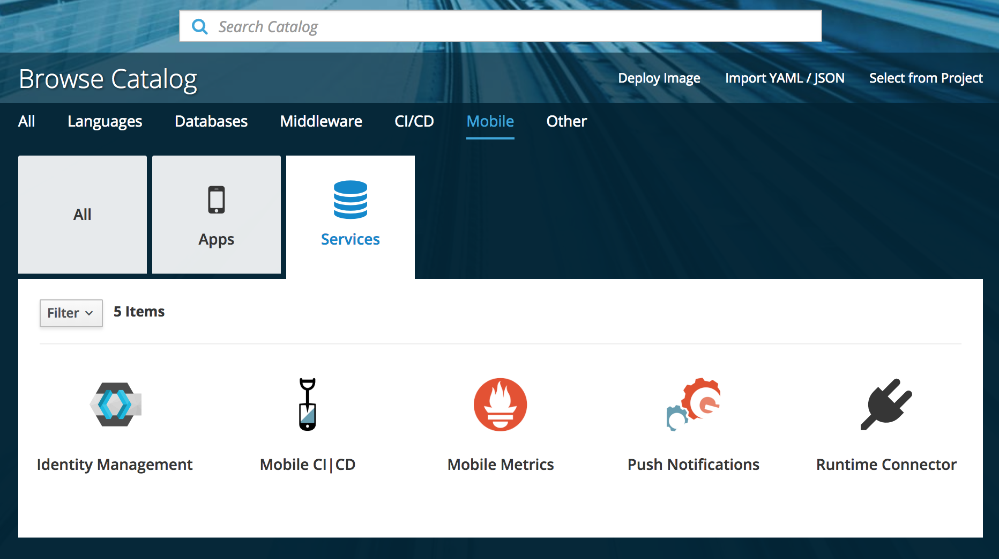
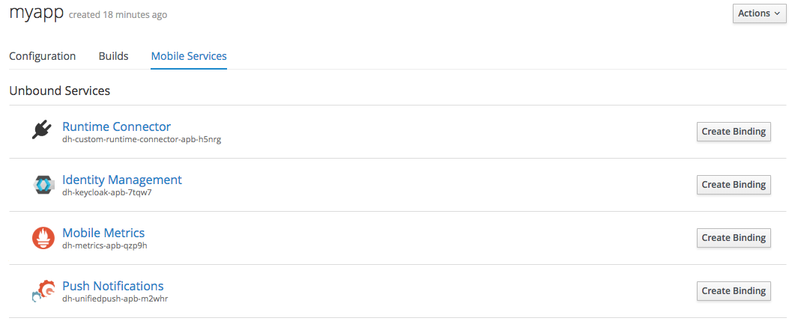

Mobile Metrics
- Introduction to the Mobile Metrics Service
- Prerequisites
- Setting Up the Mobile Metrics Service
- Configuring your Development Environment for the Mobile Metrics Service
- Downloading the Mobile Services Configuration File
- Analyzing App Usage
- Monitoring the Identity Management Service
- Monitoring Data Sync Service
- Viewing Mobile Metrics Service Dashboards
Introduction to the Mobile Metrics Service
The Mobile Metrics service allows you to gather metrics on mobile apps, device versions, device security checks and back-end mobile service usage.
-
Monitor usage by version of mobile app, platform and SDK
-
Monitor interactions with the Identity Management service
Identity management is monitored by the Mobile Metrics Service when it is provisioned. No configuration is needed.
Prerequisites
-
You are running OpenShift with Mobile Services as described in Setting up AeroGear Mobile Services on OpenShift.
Setting Up the Mobile Metrics Service
Provisioning Metrics Service
To provision the Metrics mobile service:
-
Log into the OpenShift console.
-
Create a new project or choose an existing project.
-
Select Catalog from the left hand menu.
You can filter the catalog items to only show mobile specific items by selecting the Mobile tab.
-
Click Services and choose the Metrics service.
 -
Follow the wizard for provisioning that service.
If prompted to Create a Binding, choose Do not bind at this time.
When provisioning a Metrics Service, you are prompted to set the following:
| Field | Description |
|---|---|
Grafana Storage Size (Gb) |
Size of persistent volume for Grafana (default value is recommended) |
Prometheus Storage Size (Gb) |
Size of persistent volume for Prometheus (default value is recommended) |
Postgres Storage Size (Gb) |
Size of persistent volume for Postgres (default value is recommended) |
Postgres User |
User name that will be used to connect to postgres ('user' will be used if blank) |
Postgres Password |
Password to connect to Postgres (generated if blank) |
|
If the Postgres password was generated, retrieve the password using: |
Once the wizard steps are completed, navigate to the Project Overview in OpenShift to see the newly provisioned service. Provisioning a service may take some time.
Binding a Mobile Client with the Metrics Service
To use mobile services, you must represent your mobile app in OpenShift using a Mobile Client, and that Mobile Client must be associated with the mobile service. This association is called binding and once it’s done, your mobile app can use that service immediately.
To associate a Mobile Client with a mobile service:
Procedure
-
Navigate to the Overview of your OpenShift project.
-
Select the Mobile Client name listed in the Mobile Clients section.
-
Navigate to Mobile Services tab.
 -
Click Create Binding and follow the Create Binding wizard to associate the Mobile Client with the Metrics Service.
-
Fill out the binding parameters required by the Metrics Service.
Downloading the Mobile Services Configuration File
-
Navigate to your project in OpenShift.
-
On the Overview screen, expand your Mobile Client to view the CLIENT INFO.
-
Copy the configuration to your clipboard.
-
Save the contents of the clipboard to a new file called
mobile-services.json.The mobile-services.json file is the link between your provisioned services on OpenShift and the mobile app you are developing. This file provides all required configuration to initialise the various SDKs and get them hooked up/connected to the back-end services. -
Follow the next specific additional instructions depending on your platform:
Analyzing App Usage
This guide shows how to use app metrics to provide rich visualizations regarding app usage that can then drive development planning, for example, when should support for version x.y of app end?'
Viewing Dashboards
There are many visualisations available in the default dashboards in Grafana. There are 2 dashboards where App Metrics data is shown:
-
Mobile Service Dashboard (Summary data in the 'Mobile App Metrics' section)
-
Mobile App Metrics Dashboard
In general, the summary data that is visible on the 'Mobile Services' Dashboard is also available on the 'Mobile App Metrics' dashboard, but in more detail.
Analyzing App launches
An App launch is a metric event that occurs when an App is launched on a device. The total number of App launches for a given time shows how many times an App was launched in that time, regardless of if it was the same device or different devices. It can be useful as a gauge on how much activity the App has. However, as it doesn’t take into account multiple launches from the same device, it isn’t useful as a gauge for 'stickiness' of the App.
Analyzing unique clients
Every metric event has a unique client identifier associated with it. This unique client identifier is generated the first time an App is started. It is worth noting this identifier will be regenerated if a user re-installs an App. The total number of unique clients for a given time shows how many users launched an App at least once. This can be useful as a gauge on how many active App users there currently are. The time range is an important factor when viewing the number of unique clients. Viewing unique clients for the last year gives a very different insight than for the last week. In Grafana, the time range can be changed in the top right of the Dashboard view.
Analyzing unique clients per App
Every metric event has an App identifier associated with it. An App identifier uniquely identifies an App. It is bundled with the App binary. There can be more than 1 App (each with a different App identifier) sending metrics events to the same Metrics Service. For example, there might be an Admin Portal App and a Field Worker App both using the same back-end services and same Mobile Metrics Service. The number of unique clients per App gives a breakdown of all users by the App they are using. However, if you only have 1 App there is no difference between the number of unique clients and the number of unique clients per App.
Analyzing unique clients per platform
Every metric event has the platform associated with it. An example of a platform is Android or iOS. This can be useful for making decisions about which platform to put effort into. However, if all your Apps are on a single platform, there is no difference between the number of unique clients and the number of unique clients per platform.
Analyzing unique clients per sdk version
Every metric event has the AeroGear sdk version associated with it. This can be useful for making decisions about what features to deprecate or drop support for, or applying backwards incompatible server changes/updates. This metric will be more valuable as more versions of an App (with different sdk versions) are published.
Analyzing unique clients per app version
Every metric event has the App version associated with it. The App version is set by the developer. Like the sdk version, this can be useful for making decisions about what features to deprecate or drop support for, or applying backwards incompatible server changes/updates. It can also be useful to see the uptake rate of newly published versions of an App.
Related Information
See Grafana documentation for more information on the following topics:
Monitoring the Identity Management Service
Prerequisites
-
The Mobile Metrics Service and Identity Management Service must be provisioned in the same OpenShift project to access data.
Overview
After the Mobile Metrics Service (includes Grafana for visualization and the Prometheus monitoring system) and Identity Management Service are provisioned, you should be able to see the "Keycloak Metrics" in the list of available dashboards (navigate to Grafana’s exposed URL → Log in → Home → Select Keycloak Metrics).
Dashboard panel descriptions
The Keycloak dashboard consists of several panels which give you an overview of the specific events, such as the number of registered users, memory usage etc.
Below you will find a detailed description of each panel and its values.
Singlestat Panels
Singlestat panels show you the main summary of a single data series.
-
Total Registrations: Total number of registered (non-admin) users. This number comprises all successful registrations made via various providers, e.g. Keycloak, Github, Facebook etc.
-
Total Logins: Total number of successful logins (only non-admin users) over all providers.
-
Total Login Errors: Total number of failed login attempts.
-
Current Memory: The amount of memory currently used by the Identity Management Service
Graph panels
Used to show how certain values change over time, e.g. the number of successful logins.
-
Logins: Overview of the successful logins over time
-
Login Errors: Overview of the failed login attempts over time
-
Memory Usage: The values in this graph represents the following:
-
Used: The amount of memory currently used by the Identity Management Service
-
Commited: The amount of memory that is guaranteed to be available for use (by JVM)
-
Max: The maximum amount of memory that can be used for memory management
-
Pie Charts
Used to show the distribution of data, e.g. the number of logins per identity provider.
-
Logins Per Provider: Overview of the successful (non-admin) user logins per provider
-
Registrations Per Provider: Overview of the successful (non-admin) user registrations per provider.
Related Information
Monitoring Data Sync Service
Prerequisites
-
You have provisioned the Mobile Metrics Service as described in Provisioning Mobile Metrics Service.
-
You have provisioned the Data Sync Service as described in Provisioning Data Sync Service.
| The Mobile Metrics Service and Data Sync Service must be provisioned in the same OpenShift project to access data. |
Overview
After the Mobile Metrics Service (includes Grafana for visualization and the Prometheus monitoring system) and Data Sync Service are provisioned, you should be able to see the "Data Sync Metrics" in the list of available dashboards (navigate to Grafana’s exposed URL → Log in → Home → Select Data Sync Metrics).
Dashboard panel descriptions
The Data Sync dashboard consists of several panels which give you an overview of the specific events and resources, such as memory usage, CPU usage, resolved operation count etc.
Below you will find a detailed description of each panel and its values.
Singlestat Panels
Singlestat panels show you the main summary of a single data series.
-
CPU Usage: CPU usage percentage of Data Sync Service used currently.
-
Memory Usage: The amount of memory currently used by the Data Sync Service
Graph panels
Used to show how certain values change over time, e.g. the number of operations resolved.
-
Memory Usage in Time: The amount of memory used by the Data Sync Service over time
-
CPU Usage in Time: The percentage of CPU used by the Data Sync Service over time
-
Queries/Mutations Resolved: Overview of the resolved queries and mutations over time
-
Resolver Timings: Overview of the how long it took to resolve operations over time.
Viewing Mobile Metrics Service Dashboards
Overview of Dashboards
The Mobile Metrics Service gathers metrics data from mobile services and uses Grafana to display that data.
A Grafana dashboard allows you to arrange panels and charts together to provide a visual overview of your metrics. See the Grafana Getting Started guide for an introduction to dashboards.
When you create an instance of a Mobile Services service from the OpenShift service catalog, a dashboard that shows metrics about that service is added to Grafana. Also, when you configure your Mobile Client to use metrics, you can see the metrics in Grafana.
In addition to those, you can create and modify custom dashboards to:
-
visualize metrics from apps and back-end services that are not mobile services
-
monitor additional metrics from mobile services that are not displayed by default
-
monitor additional metrics from OpenShift that are not displayed by default
Creating Dashboards in Grafana
You can create dashboards using Drag and Drop in Grafana. See the Grafana Documentation to learn about building Grafana dashboards.
Importing Dashboards
All Grafana dashboards are represented by a JSON definition. Dashboards can be imported and exported using that JSON definition as described in the importing and exporting dashboards Grafana documentation.
Customizing Mobile Services Dashboards
When you provision a mobile service from the service catalog, a dashboard showing metrics about that service is added to Grafana.
| If you edit the default mobile service dashboards, your changes will be lost whenever the associated mobile service is updated. |
Before editing the dashboard, clone it as follows:
-
Open the Dashboard you want to clone.
-
Click the settings icon in the dashboard controls to show the Settings screen.
-
Select the Save As option and enter in a name for the new dashboard, for example
Copy of Sync Service Dashboard.